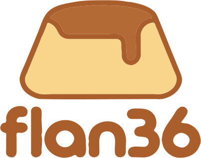
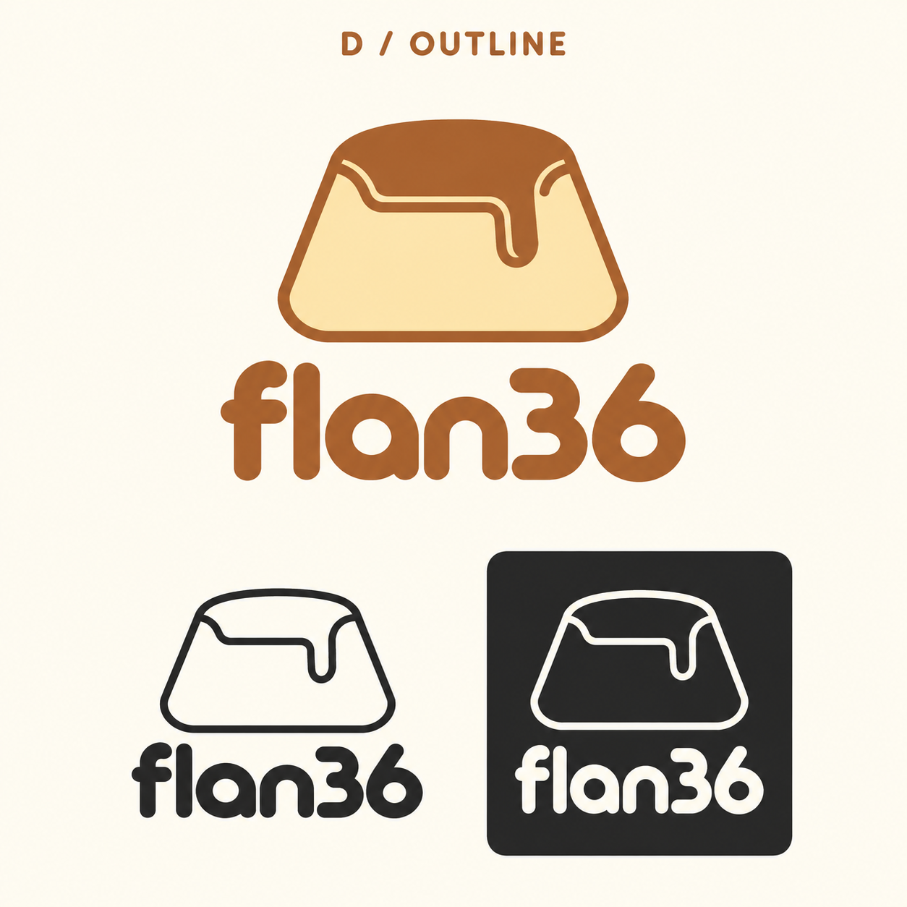
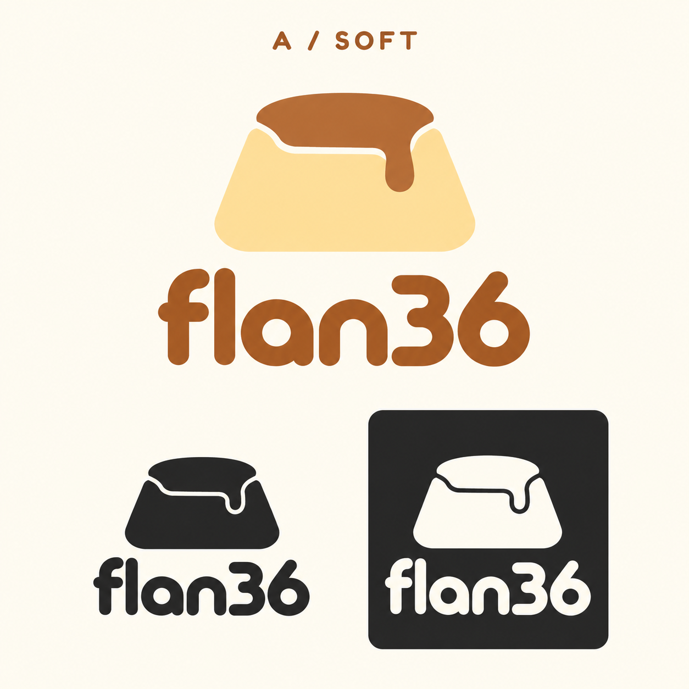
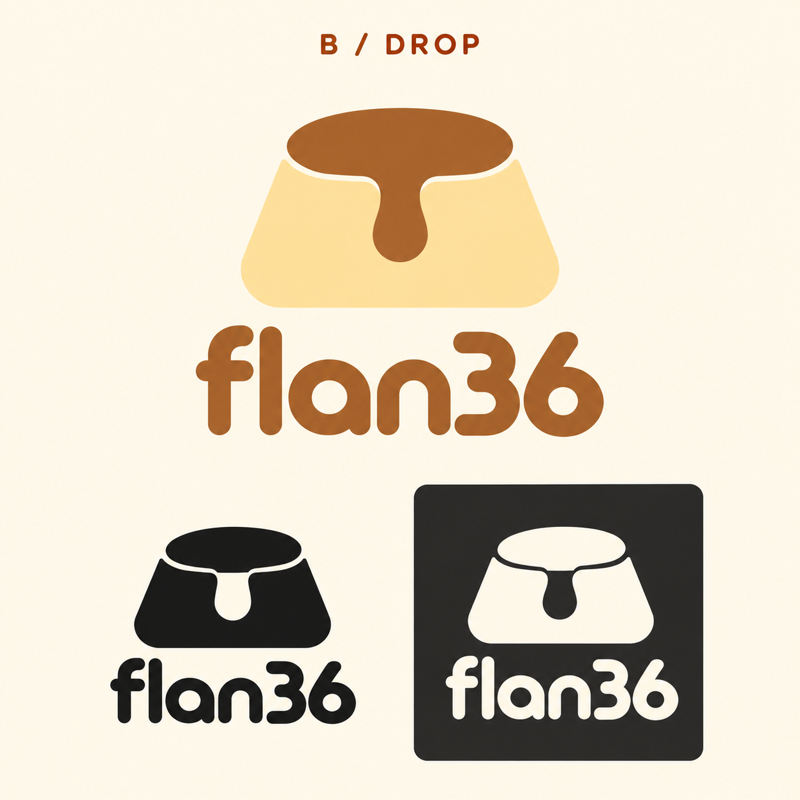
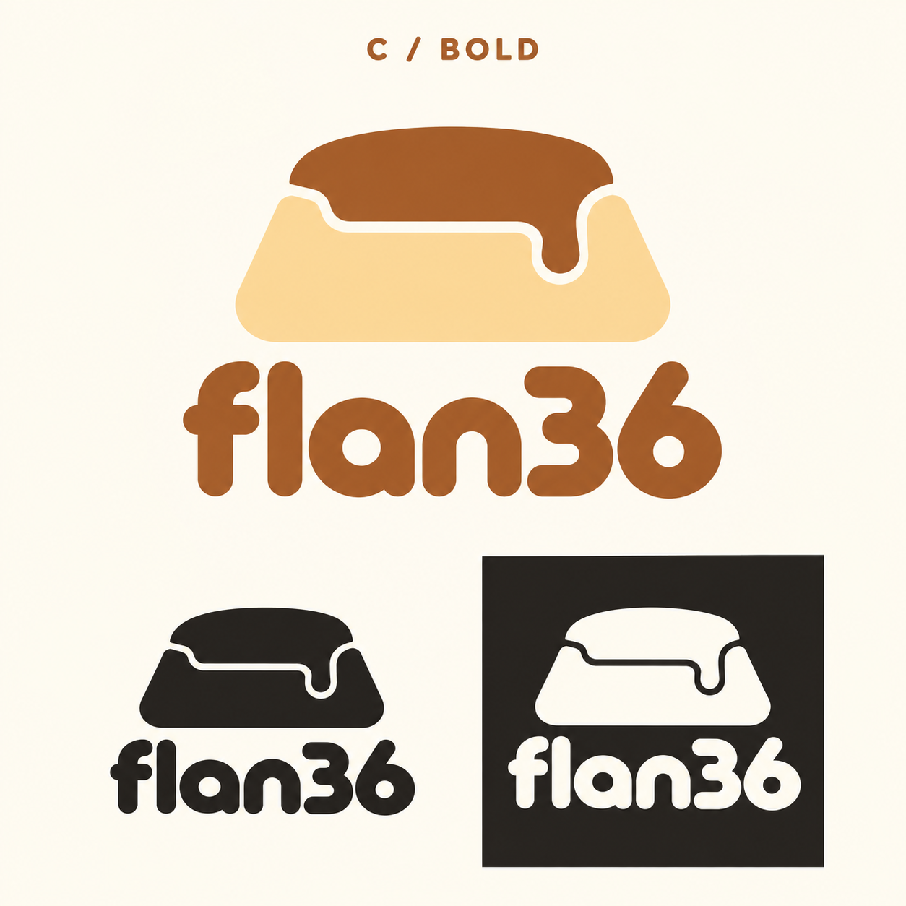

{kind=link}
{kind=link}

A little character.
Outline, now in editable SVG. Color, one ink and reversed versions share the same contours. Every letter is a path: no fonts to install.
{kind=link}
{kind=link}
{kind=link}
{kind=link}
{kind=link}
Wordmark only ↓ · Preview PNG ↓
{kind=link}
{kind=link}
Eight logo SVGs, a preview sheet and an import guide. Black variants have passed FreeCAD geometry-import and trial-extrusion checks. Final PCB placement and case relief still need qualification at the chosen size.
Selected concept and earlier Caramel refinements
{kind=link}

D / CARAMELSelected logo
Outline
An open contour interpretation with a solid wordmark.
Download Outline PNG ↓{kind=link}

A / CARAMEL
Soft
Closest to the original: soft shoulders, a shorter side drip and a quiet silhouette.
Download Soft PNG ↓{kind=link}

{kind=link}

Original directions — Caramel, Split and Pixel

01 / CARAMEL
Soft. Simple. Recognizable.
One caramel drip and a generous silhouette. A quiet signature for the case.
Download concept PNG ↓
02 / SPLIT
Two halves. One flan.
The dessert and the split keyboard share a single mark.
Download concept PNG ↓03 / PIXEL
A retro aftertaste.
A pixel flan for Handheld, Retro TV and Cyberpunk frames.
Download concept PNG ↓{kind=link}
Earlier boards are AI-generated concept references. The SVG master follows the selected board’s monochrome outline; all vector variants derive from that master. The keyboard geometry is unchanged.